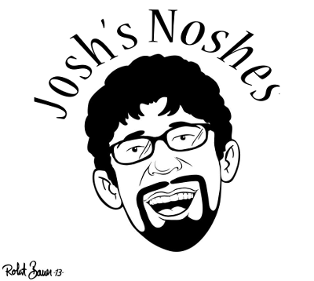
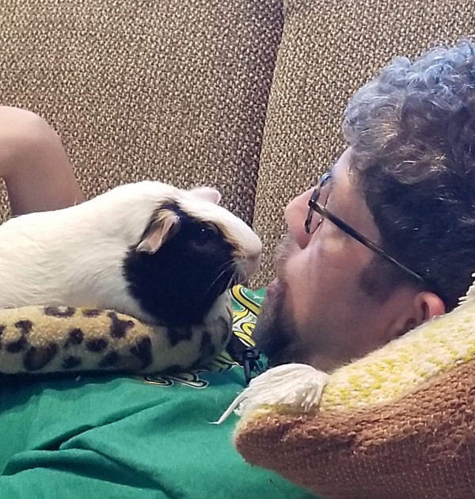
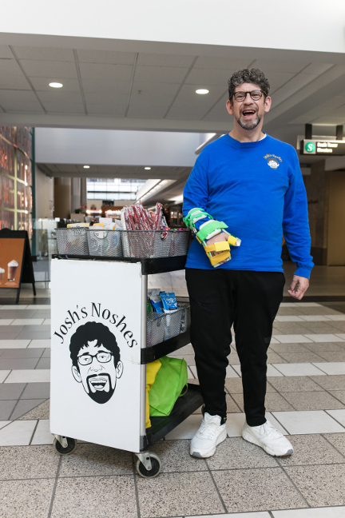

Josh's Noshes is a traveling snack cart at Beaumont Hospital in Royal Oak where he sells snacks throughout the hospital to staff and visitors.
The smiles are free.
You can learn more about me by watching the video below.
Watch
Learn more about my snack cart with Channel 7 News!

I have Williams syndrome. If you want to find out more about it, go to this website
https://www.williams-syndrome.org

© Josh's Noshes
Design:
HTML5 UP